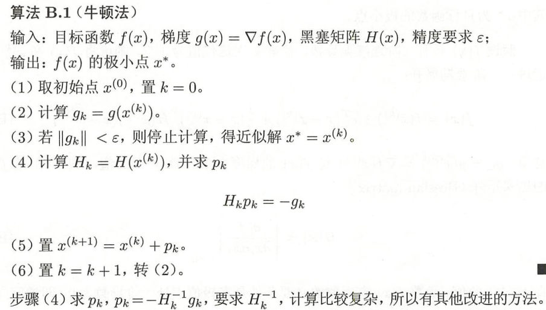
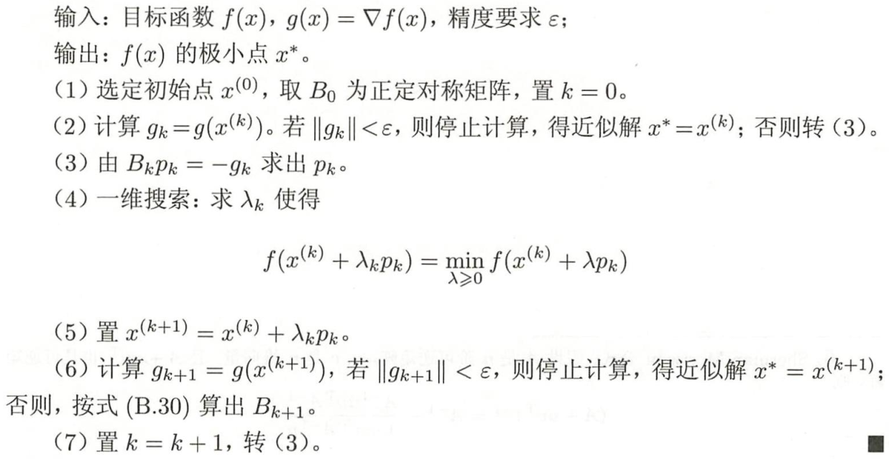

牛顿法与拟牛顿法
牛顿法是数值优化算法中的大家族，她和她的改进型在很多实际问题中得到了应用。在机器学习中，牛顿法是和梯度下降法地位相当的的主要优化算法。
牛顿法不仅可以用来求解函数的极值问题，还可以用来求解方程的根，二者在本质上是一个问题，因为求解函数极值的思路是寻找导数为 0 的点，这就是求解方程。在本文中，我们介绍的是求解函数极值的牛顿法。
和梯度下降法一样，牛顿法也是寻找导数为 0 的点，同样是一种迭代法。核心思想是在某点处用二次函数来近似目标函数，得到导数为 0 的方程，求解该方程，得到下一个迭代点。因为是用二次函数近似，因此可能会有误差，需要反复这样迭代，直到到达导数为 0 的点处。下面我们开始具体的推导，先考虑一元函数的情况，然后推广到多元函数。
一元函数的情况
为了能让大家更好的理解推导过程的原理，首先考虑一元函数的情况。根据一元函数的泰勒展开公式，我们对目标函数在 x0 点处做泰勒展开，有：
f(x)=f(x0)+f′(x0)(x−x0)+21f′′(x0)(x−x0)2+…+n!1f(n)(x0)(x−x0)n…
如果忽略 2 次以上的项，则有：
f(x)=f(x0)+f′(x0)(x−x0)+21f′′(x0)(x−x0)2
现在我们在 x0 点处，要以它为基础，找到导数为 0 的点，即导数为 0。对上面等式两边同时求导，并令导数为 0，可以得到下面的方程：
f′(x)=f′(x0)+f′′(x0)(x−x0)=0
可以解得：
x=x0−f′′(x0)f′(x0)
这样我们就得到了下一点的位置，从而走到 x1。接下来重复这个过程，直到到达导数为 0 的点，由此得到牛顿法的迭代公式：
xt+1=xt−f′′(xt)f′(xt)
给定初始迭代点 x0 ，反复用上面的公式进行迭代，直到达到导数为 0 的点或者达到最大迭代次数。
多元函数的情况
无约束最优化问题
x∈Rnminf(x)
其中 x∗ 为目标函数的极小点。
设 f(x) 具有二阶连续偏导数，若第 k 次迭代值为 xk ，则可将 f(x) 在 xk 附近进行二阶泰勒展开
f(x)=f(x(k))+gkT(x−x(k))+21(x−x(k))TH(x(k))(x−x(x))
其中 gk=g(x(k))=∇f(x(k)) 是 f(x) 的梯度向量在点 xk 的值，H(x(k)) 是 f(x) 得黑塞矩阵：
H(x)=[∂xi∂xj∂2f]n×n
在点 xk 的值。
函数 f(x) 有极值的必要条件是在极值点处一阶导数为0，即梯度向量为0。特别的当 H(x(k)) 是正定矩阵时，函数 的 f(x) 极值为极小值。
牛顿法利用极小点得必要条件：
∇f(x)=0
每次迭代从点 xk 开始，求目标函数得极小点，作为第 k+1 次迭代值 xk+1，具体地，假设 xk+1 满足：
∇f(x(k+1))=0
由 f(x)=f(x(k))+gkT(x−x(k))+21(x−x(k))TH(x(k))(x−x(x)) ，根据二阶泰勒展开，对 ∇f(x) 在 xk 进行展开得（也可以对上述泰勒公式再进行求导）得：
∇f(x)=gk+Hk(x−x(k))
其中 Hk=H(x(k)) ，这样, ∇f(x(k+1))=0 成为：
gk+Hk(x(k+1)−x(k))=0
因此，
x(k+1)=x(k)−Hk−1gk
或者：
x(k+1)=x(k)+pk
其中，
Hkpk=−gk
式 x(k+1)=x(k)−Hk−1gk 作为迭代公式得算法就是牛顿法
算法步骤

.jpg)
牛顿法与梯度下降法
梯度下降法和牛顿法相比，两者都是迭代求解，不过梯度下降法是梯度求解，而牛顿法是用二阶的海森矩阵的逆矩阵求解。相对而言，使用牛顿法收敛更快（迭代更少次数）。但是每次迭代的时间比梯度下降法长。
梯度下降法：x(k+1)=x(k)−λ∇f(xk)
牛顿法：x(k+1)=x(k)−λ(H(k))−1∇f(xk)
梯度下降法中，每一次 x 增加的方向一定是梯度相反的方向 −ϵk∇k。增加的幅度由 ϵk 决定，若跨度过大容易引发震荡。
而牛顿法中，每一次 x 增加的方向是梯度增速最大的反方向 −Hk−1∇k（它通常情况下与梯度不共线）。增加的幅度已经包含在 Hk−1 中（也可以乘以学习率作为幅度的系数）。
对于不带约束条件的问题，我们可以将x的初始值设定为任意值，最简单的，可以设置为全0的向量。迭代终止的判定规则和梯度下降法相同，是检查梯度是否接近于0。
面临的问题
牛顿法并不能保证每一步迭代时函数值下降，也不保证一定收敛。为此，提出了一些补救措施，其中的一种是直线搜索（line search）技术，即搜索最优步长。具体做法是让 γ 取一些典型的离散值，如0.0001,0.001,0.01等，比较取哪个值时函数值下降最快，作为最优步长。
和梯度下降法相比牛顿法有更快的收敛速度，但每一步迭代的成本也更高。在每次迭代中，除了要计算梯度向量还要计算Hessian矩阵，并求解Hessian矩阵的逆矩阵。
牛顿法面临的另外一个问题是Hessian矩阵可能不可逆，从而导致这种方法失效。此外，求解Hessian矩阵的逆矩阵或者求解线性方程组计算量大，需要耗费大量的时间。为此，提出了拟牛顿法这种改进方案
除此之外，牛顿法在每次迭代时序列xi可能不会收敛到一个最优解，它甚至不能保证函数值会按照这个序列递减。解决第一个问题可以通过调整牛顿方向的步长来实现，目前常用的方法有两种：直线搜索和可信区域法。
拟牛顿法
牛顿法在每次迭代时需要计算出Hessian矩阵，然后求解一个以该矩阵为系数矩阵的线性方程组，这非常耗时，另外Hessian矩阵可能不可逆。为此提出了一些改进的方法，典型的代表是拟牛顿法（Quasi-Newton）。
在牛顿法的迭代中，需要计算海森矩阵的逆矩阵 ![[公式]](https://www.zhihu.com/equation?tex=H%5E%7B-1%7D) ，这一计算比较复杂，考虑用一个
，这一计算比较复杂，考虑用一个 ![[公式]](https://www.zhihu.com/equation?tex=n) 阶矩阵
阶矩阵 ![[公式]](https://www.zhihu.com/equation?tex=G_k%3DG%28x%5E%7B%28k%29%7D%29) 来近似代替
来近似代替 ![[公式]](https://www.zhihu.com/equation?tex=H_k%5E%7B-1%7D%3DH%5E%7B-1%7D%28x%5E%7B%28k%29%7D%29) 。这就是拟牛顿法的基本想法。
。这就是拟牛顿法的基本想法。
先看下牛顿法迭代中海森矩阵 Hk 满足的条件。首先 Hk满足以下关系：
在公式 ∇f(x)=gk+Hk(x−x(k)) 中，取 x=x(k+1) 既得：
gk+1−gk=Hk(x(k+1)−x(k))
记 yk=gk+1−gk,δk=x(k+1)−x(k) ，则
yk=Hkδk
或
Hk−1yk=δk
上式称为拟牛顿条件
其次，如果 Hk 是正定的（ Hk−1也是正定的），那么保证牛顿法的搜索方向 pk 是下降方向。这是因为搜索方向是 pk=−Hk−1gk ，由 x(k+1)=x(k)−Hk−1gk 有：
x=x(k)+λpk=x(k)−λHk−1gk
所以 f(x) 在 xk 得泰勒展开式 ：
f(x)=f(x(k))+gkT(x−x(k))+21(x−x(k))TH(x(k))(x−x(k))
可以近似写成：
f(x)=f(x(k))−λgkTHk−1gk
因 Hk−1 正定，故有 gkTHk−1gk>0 ， 。当 ![[公式]](https://www.zhihu.com/equation?tex=%5Clambda) 为一个充分小的正数时，总有 f(x)<f(x(k)) ，也就是说
为一个充分小的正数时，总有 f(x)<f(x(k)) ，也就是说 ![[公式]](https://www.zhihu.com/equation?tex=p_%7Bk%7D) 是下降方向。
是下降方向。
因此拟牛顿法将 Gk 作为 Hk−1 近似。要求 满 Gk 足同样的条件。首先，每次迭代矩阵 Gk 是正定的。同时， Gk 满足下面的拟牛顿条件：
Gk+1yk=δk
按照拟牛顿条件，在每次迭代中可以选择更新矩阵 Gk+1
Gk+1=Gk+ΔGk
根据此条件，构造出了多种拟牛顿法，典型的有 DFP 算法、BFGS算法、L-BFGS算法等，
BFGS algorithm
BFGS（Broyden-Fletcher-Goldfarb-Shanno）
BFGS 算法是最流行得拟牛顿算法。
可以考虑用 Gk 逼近海森矩阵得逆矩阵 H−1，也可以考虑用 Bk 逼近海森矩阵。
这时，相应得拟牛顿条件是
Bk+1δk=yk
可以用到同样得方法得到另一个迭代公式。首先令
Bk+1=Bk+Pk+QkBk+1δk=Bkδk+Pkδk+Qkδk
考虑使 Pk 和 Qk 满足：
Pkδk=ykQkδk=−Bkδk
找出适合条件得 Pk 和 Qk ，得到 BFGS 算法矩阵 Bk+1 得迭代公式：
Bk+1=Bk+ykTδkykykT−δkTBkδkBkδkδkTBk
可以证明，如果初始矩阵 B0 是正定的，则迭代过程中的每个矩阵 Bk 都是正定的。
BFGS 算法流程

参考
{kind=link}
.jpg)
{kind=link}